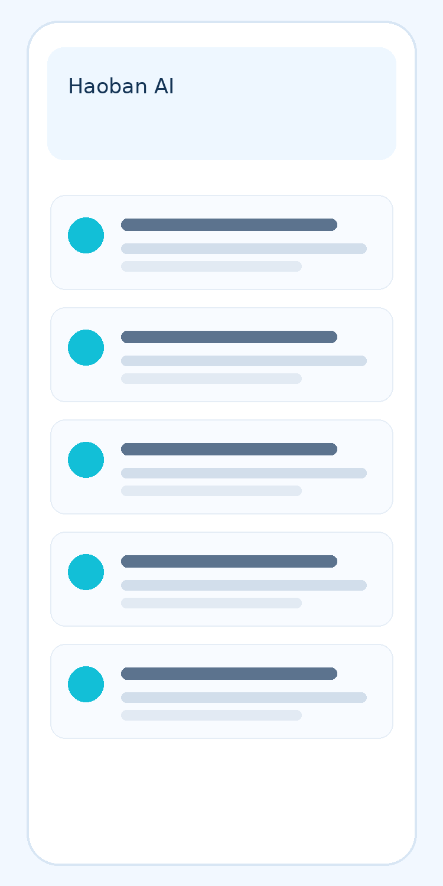

报告难理解，检测价值难感知
专业指标、参考区间和异常标记不易理解，用户需要清晰的报告说明与咨询入口，避免把单项异常直接等同于疾病诊断。
检后无路径，健康行动难落地
用户即使发现指标异常，也不知道下一步该复查、就医、咨询用药，还是调整生活方式，检测结果难以转化为明确、可执行的健康行动。
检后联系弱，持续服务难衔接
报告交付后缺少随访安排与联系记录，难以持续了解用户需求。复查应依据医生建议，商业通知应与医疗风险处置分开。
特检项目专业性强，说明难统一
特检项目的适用范围与局限不易解释，销售和客服需要统一、经审核的资料支持，涉及个体结果的问题应交由专业人员答复。
多类型报告信息整理
面向生化、免疫、血常规等报告提供文字识别与指标整理；具体报告类型、格式与识别范围需经项目评估，结果由人工核对
- 拍照上传 / 检测机构系统对接
- 单位标准化与参考范围识别
- 按原报告标注异常 · 分类展示
多指标辅助解读与线索提示
结合授权提供的病史、用药和历史报告整理指标变化，按机构规则提示待核实线索，临床意义由医生判断。
- 指标变化整理 · 待核实线索提示
- 复查与就医安排由医生确认
- 供专业人员复核的信息摘要
特检项目资料解读辅助
基于机构审核的项目资料解释指标含义与检测局限，不以单项结果推断疾病或提供个体治疗方案。
- 复杂报告转化为用户可理解语言
- 项目适用范围与检测局限说明
- 知识检索 · 引用来源可追溯
报告科普与用户教育
帮助用户理解指标、参考范围与报告局限；异常原因、严重程度和下一步处置需结合临床情况由医生判断。
- 经审核的饮食、运动与生活方式科普
- 整理待咨询问题 · 提供人工咨询入口
- 检测前后注意事项与常见问题说明
报告后随访与复查提醒
按授权及医护确认的计划安排随访；高风险线索优先转专业人员，不与复购提醒或营销任务绑定。
- 按医嘱提醒复查 · 记录指标变化
- 随访周期由医护按实际情况设置
- 高风险线索转人工 · 独立于商业通知
终端服务智能体
面向客户、销售与技术支持团队，基于经审核的资料辅助产品问答与流程说明；个体结果解读转专业人员。
- 客服助手 / 检测顾问助手
- 销售与技术支持知识库
- 医生 / 检验师报告解读助手
医学检验机构
面向第三方检验机构，AI 检验报告理解与健康服务平台可围绕报告信息整理、指标辅助解读与随访协作配置应用。报告解析结果需核对，指标说明不替代临床判断，风险线索交由专业人员处理，随访提醒按医护确认的计划执行。具体接入范围与服务流程需结合项目评估确定。
获取 IVD 与检验行业 AI 落地方案
围绕报告辅助解读、检后随访与授权数据管理，沟通适用能力、人工复核流程与实施条件。
- 电话 15336530072
- 邮箱 marketing@wisediag.com
- 地址 杭州市临平区杭州智能健康谷A栋7楼
提交后顾问将尽快联系您，就业务场景、适用能力与接入方式进一步沟通。